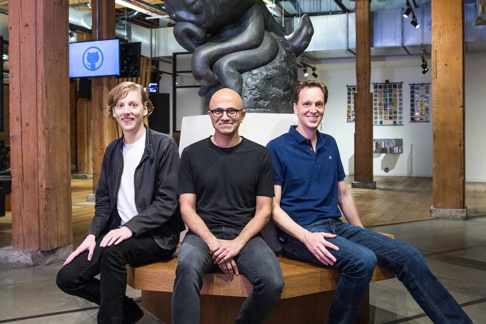

Microsoft compra GitHub por 7.500 millones de dólares
Por: César Rosales
26 agosto, 2018
En las últimas horas los datos apuntaban a una opción que finalmente se ha confirmado:
Microsoft adquiere GitHub, y
lo hace por 7.500 millones de dólares, una de las
operaciones económicas más costosas de su historia.
El mensaje oficial de confirmación de Microsoft habla de cómo este
acuerdo "refuerza nuestro compromiso con la libertad,
apertura e innovación
para los desarrolladores". GitHub mantendrá su marca y operará de forma independiente.
Una adquisición económicamente muy importante
Algunos datos previos apuntaban a cómo la valoración de GitHub
era de unos 2.000 millones de dólares en tiempos
recientes, pero finalmente
el coste de la adquisición ha sido casi cuatro veces superior al de aquella
estimación a la
que apuntaban por ejemplo en la exclusiva de ayer
de Bloomberg.
Todo seguirá igual en GitHub
Seguramente la gran incógnita ahora será si el servicio de GitHub
cambiará tras la adquisición. Microsoft no ha influido
en la forma de
operar de LinkedIn tras su adquisición, y parece que esa será también la
filosofía con esta operación.
Así lo asegura el comunicado de Microsoft, en el cual se indica cómo
GitHub seguirá operando de forma independiente
"proporcionando una
plataforma abierta para todo tipo de desarrolladores e industrias".
Esos desarrolladores seguirán pudiendo utilizar "los lenguajes de
programación, herramientas y sistemas operativos de su
elección para sus proyectos,
y seguirán pudiendo implantar su código en cualquier sistema operativo, cualquier
plataforma en la nube y cualquier dispositivo".
Donde sí habrá cambios es en la plataforma directiva: el actual
CEO de GitHub, Chris Wanstrath, se convertirá en un
consejero técnico "que
trabajará en iniciativas software estratégicas", y para sustituirle en Microsoft
han nombrado
CEO de GitHub a Nat Friedman (a la derecha de Satya Nadella en la foto de
portada), co-creador de Xamarin.
Ahora queda por ver si efectivamente todo seguirá igual en GitHub
con ese cambio de papeles, pero desde luego este es un
claro movimiento
de Microsoft para tratar de atraer lo máximo posible a la comunidad de desarrolladores.